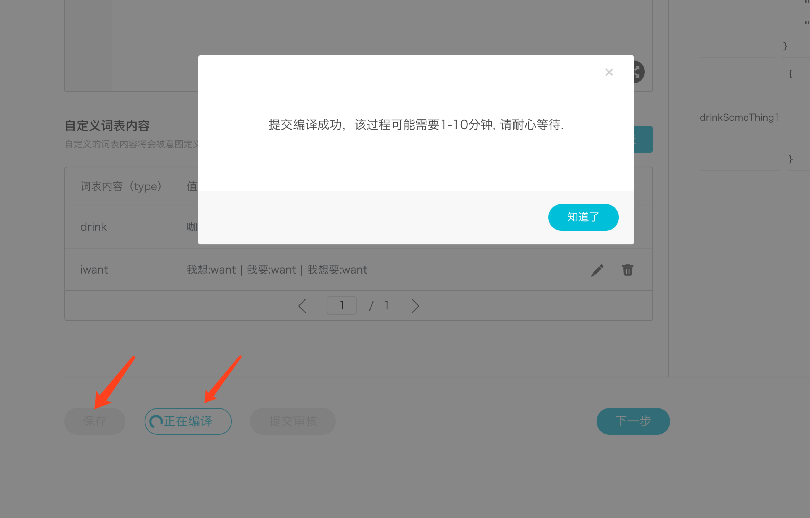

1.1. 词表
词表是用户与技能交互过程中的一个重要概念，是指某领域词汇的集合。当用户询问北京天气怎么样时，其中北京是城市信息，将北京、天津、上海等所有城市信息集合起来就组成了中国城市的词表。 目前开放平台有自定义词表和预定义词表
1.1.1. 预定义词表
1.1.2. 1. 数字、日期和时间相关
数字的预定义词表。
| 自定义词表类型 | 简介 | 支持语言 |
|---|---|---|
| ROKID.NUMBER | 阿拉伯数字及汉语数字 | 中文 |
| ROKID.DATETIME_ZH | 某年某月某一天 | 中文 |
| ROKID.RECENT_ZH | 「近期」的时间词汇 | 中文 |
| ROKID.YEAR_ZH | 以「年」为单位的时间词汇 | 中文 |
| ROKID.MONTH_ZH | 以「月」为单位的时间词汇 | 中文 |
| ROKID.DAY_ZH | 以「日」为单位的时间词汇 | 中文 |
| ROKID.HOUR_ZH | 以「小时」为单位的时间词汇 | 中文 |
| ROKID.MINUTE_ZH | 以「分钟」为单位的时间词汇 | 中文 |
| ROKID.SECOND_ZH | 以「秒」为单位的时间词汇 | 中文 |
| ROKID.TIME_ZH | 具体的时间或时间段 | 中文 |
ROKID.DATE
日期解析，将表示日期的文字转换成utc date格式，格式参照日期格式国际标准ISO-8601。 对于一个特定的日期，如“今天”、“现在”、“一月十五日”，将会转换成一个完整的日期：2018-01-15 对于一个特定的星期，如“这周”、“下周”，将会转换成:2018-W3 对于一个特定的周末，如“这周末”，将会转换成：2018-W3-WE 对于一个特定的月份，并且没有指定日期，将会转换成：2018-01 对于一个特定的年份，将会转换成：2018 对于一个特定的十年期，将会转换成：201X 对于一个特定的季节，将使用SP表示春季，SU表示夏季，FA表示秋天，WI表示冬季。
ROKID.DURATION 时间段解析，将表示周期的文字转换成utc duration格式，格式参照时间段格式国际标准ISO-8601。基本格式PnYnMnDTnHnMnS，P表示这是一个周期，n是表示紧接的时间单位的量词，比如，P3D表示3天。T表示这个周期是一个时间周期，而不是日期周期。 “十分钟”：PT10M “五小时”：PT5H “三天”：P3D “四十五秒钟”：PT45S “八周”：P8W “十年”：P10Y “五小时十分钟”：PT5H10M “两年三小时十分钟”：P2YT3H10M
ROKID.TIME 时间解析，将表示时间的文字转换成utc time格式，格式参照时间格式国际标准ISO-8601。 “中午”、“正午”：12:00 “午夜”：00:00 “六点”：06:00 “早上五点”、“凌晨五点”：05:00 “下午二点三十”：14:30 “晚上二十三点五十九分”：23:59 “早上”：MO “现在”：21:16
不支持
- 农历不支持
- “又”不支持
- 五月3不支持，需要带单位
- 繁体字，如“仨”不支持
DATE问题
世纪：
- 20世纪（19）
- 二十世纪（19）
- 二十一世纪（20）
年代：
- 只支持：五十年代，六十年代，七十年代，八十年代，九十年代
- 五十年代，五零年代，50年代（195X）
- 六十年代，六零年代，60年代（196X）
- 七十年代，七零年代，70年代（197X）
- 八十年代，八零年代，80年代（198X）
- 九十年代，九零年代，90年代（199X）
世纪+年代：
- 二十一世纪初（200X）
- 21世纪初（200X）
- 二十世纪10年代（191X）
- 二十世纪一零年代（191X）
- 二十世纪一十年代（191X）
- 二十世纪20年代（192X）
- 二十世纪30年代（193X）
- 二十世纪40年代（194X）
- 二十世纪50年代（195X）
- 二十世纪60年代（196X）
- 二十世纪70年代（197X）
- 二十世纪80年代（198X）
- 二十世纪90年代（199X）
公元+世纪：
- 公元前三世纪（-2）
- 公元三世纪（2）
天：
- 三号（2018-05-03）
- 3日（2018-05-03)
- 三日（2018-05-03）
- 3号（2018-05-03，月份不变，变更日期）
月份：
- 五月份（2018-05）
- 5月（2018-07）
月份+天（带单位）：
- 五月三日（2018-05-03）
- 五月三号（2018-05-03）
- 五月3日（2018-05-03）
- 5月三日（2018-05-03）
- 5月3日（2018-05-03）
月份+天（不带单位）：
- 五月三（命中，utc无返回，应该命中：2018-05-03）
- 五月3（命中，utc无返回，应该命中：2018-05-03）
- 5月三（命中，utc无返回，应该命中：2018-05-03）
- 5月3（命中，utc无返回，应该命中：2018-05-03）
年：49年以前命中结果都是20开头，50以后则是19开头
- 1980年（1980）
- 一九八零年（1980）
- 89年（1989）
- 八九年（1989）
- 四九年（2049）
- 零零年（2000）
- 零一年（2001）
- 00年（2000）
- 01年（2001）
- 今年（2018）
- 明年（2019）
- 去年（2017）
- 后年（2020）
- 前年（2016）
dateTime之前|之后：
- 五天前（2018-05-13，当前日期-5天）
- 三个月前（2018-02，当前月份-三个月）
- 四年前（2014，当前年份-4年）
- 五十年后（2068，当前年份+50年）
- 五周后（2018-W25，当前周数+5）
- 三年五个月四周三天前（2014-W16）
- 三年零五个月四周零三天前（2014-W17）
- 5年前（2013）
年+季节
- 1980年冬天（1980-WI）
- 一九八零年夏天（1980-SU）
- 89年秋天（89-FA）
- 春天（2018-SP）
- 冬天（2018-WI）
- 秋天（2018-FA）
- 夏天（2018-SU）
- 今年秋天（2018-FA）
- 明年冬天（2019-WI）
- 去年夏天（2017-SU）
- 后年春天（2020-SP）
- 前年冬天（2016-WI）
年+月份：
- 一九八零年五月（1980-05）
- 八九年五月（1989-05）
- 1980年5月（1980-05）
- 今年五月（2018-05）
- 明年五月（2019-05）
- 去年6月（2017-06）
- 后年三月（2020-03）
- 前年九月份（2016-09）
年+月+日：
- 一九八零年五月三日（1980-05-03）
- 一九八零年三月三号（1980-03-03）
- 1980年5月3日（1980-05-03）
- 八零年五月三日（1980-05-03）
- 今年五月三日（2018-05-03）
- 明年五月三日（2019-05-03）
- 去年6月四日（2017-06-04）
- 后年八月五日（2020-08-05）
- 前年五月三号（2016-05-03)
- 前年五月三日（2016-05-03）
- 一九九八年三月四（不支持，必须带单位)
对于一个特定的日期：
- 今天（当前完整的日期：2018-05-02）
- 明天（当前完整的日期+1：2018-05-03）
- 后天（当前完整的日期+2:2018-05-04）
- 前天（当前完整的日期-2:2018-04-30）
- 昨天（当前完整的日期-1：2018-05-01）
- 大前天（当前完整的日期-3：2018-04-29）
- 大后天（当前完整的日期+3: 2018-05-05）
对于一个特定的星期（支持：周，星期，礼拜）：
- 这周（2018-W20，实际周数)
- 上周（2018-W19，实际周数-1)
- 下周（2018-W21，实际周数+1)
- 本周（2018-W20，实际周数)
- 上上周（2018-W18，实际周数-2)
- 下下周（2018-W22，实际周数+2）
- 三周后（2018-W23，实际周数+3）
- 这周二（2018-W20-2）
- 本周六（2018-W20-6）
- 下周五（2018-W21-5）
- 上周三（2018-W19-3）
- 上上周一（2018-W18-1）
- 下下周天（2018-W22-7）
- 今年第三周（应该是今年第三周：2018-W03）
对于一个特定的周末（星期六和星期日）：
- 这周末（2018-W20-WE)
- 本周末（2018-W20-WE）
- 下周末（2018-W21-WE)
- 上周末（2018-W19-WE）
- 上上周末（2018-W18-WE)
- 下下周末（2018-W22-WE)
对于一个特定的月份：
- 这个月（2018-05）
- 这月（2018-04）
- 本月（2018-04）
- 下个月（2018-05）
- 上个月（2018-03）
- 下下个月（2018-06）
- 上上个月（2018-02）
对于一个特定的节假日：节假日只支持固定节假日
- 元旦（2018-01-01）
- 国庆节（2018-10-01）
- 清明节（2018-04-05），清明节不是固定在4月5日，比如2020年是4月4日
- 劳动节（2018-05-01）
- 教师节（2018-09-10）
- 儿童节（2018-06-01）
- 建军节（2018-08-01）
- 建党节（2018-07-01）
- 春节（不支持）
- 除夕夜（不支持）
- 元宵节（不支持）
年+节日：不支持
ROKID.DURATION
周
- 三周（P3W）
- 3周（P3W）
- 3个礼拜（P3W）
- 三个礼拜（P3W）
- 3星期（P3W）
- 三星期（P3W）
年
- 三年（P3Y）
- 3年（P3Y）
- 一零年（P10Y）
- 一十年（P10Y）
- 三十万年（P300000Y）
月
- 三月（P3M）
- 3个月（P3M）
- 3月（P3M）
天
- 三天（P3D）
- 2天（P2D）
- 3日（P3D）
时
- 三个小时（PT3H）
- 七二小时（PT72H）
分
- 六十分钟（PT60M）
- 60分钟（PT60M）
- 六零分钟（PT60M）
- 一刻钟？(不支持)
秒 （四五秒是否应该理解为4，5秒，而不是45秒？目前很难区分）
- 45秒（PT45S）
- 四十五秒（PT45S）
- 四五秒（PT45S）
年+月
- 一年二月（P1Y2M）
- 一年零两个月（不支持）
- 一年零两月（P1Y2M）
- 一年又两月（不支持）
- 一年一二月（P1Y12M）
- 一年十二月（P1Y12M）
- 一年零一零月（P1Y10M）
- 一年零一十月（P1Y10M）
年+月+天
- 一年零两月零三天（P1Y2M3D）
- 一年零一十月零一零天（P1Y10M10D）
- 五年零五天（P5Y5D）
- 十月34天（P10M34D）
年+月+天+时
- 一年零两月零三天二十小时（P1Y2M3DT20H）
年+月+天+时+分
- 7年13月30天8小时45分钟（P7Y13M30DT8H45M）
年+月+天+时+分+秒
- 7年13月30天8小时45分钟90秒（P7Y13M30DT8H45M90S）
ROKID.TIME
- 中午（12:00）
- 正午（12:00）
- 午夜（00:00）
- 上午（MO）
- 晚上（NI）
- 下午（AF）
- 早上（MO）
- 傍晚（EV）
- 六点（06:00）
- 六点半（06:30）
- 8时（08:00）
- 三点十二分（03:12）
- 9点三十一分四十一秒（09:31:41）
- 下午6点钟（18:00）
- 下午六点（18:00）
- 上午6点（06:00）
- 早上8点（08:00）
- 晚上8点（20:00）
- 傍晚七点（19:00）
- 中午一一点三十分（11:30）
- 早上10点（10:00）
- 凌晨三点（03:00）
1.1.3. 2. 常用名词词汇
常用名词的预定义词表。
| 自定义词表类型 | 简介 | 支持语言 |
|---|---|---|
| ROKID.COUNTRY_ZH | 国家 | 中文 |
| ROKID.WORLDCITY_ZH | 世界城市 | 中文 |
| ROKID.CN_PROVINCE_ZH | 中国省份 | 中文 |
| ROKID.CN_CITY_ZH | 中国城市 | 中文 |
| ROKID.CN_ARE_ZH | 中国县／区 | 中文 |
| ROKID.ANIMALYEAR_ZH | 生肖年 | 中文 |
| ROKID.ERAYEAR_ZH | 干支年 | 中文 |
| ROKID.ZONE_ZH | 早上、晚上等某个时间段的词汇 | 中文 |
| ROKID.MOVIE | 电影 | 中文 |
1.1.4. 3. 其他词汇
其他词汇的预定义词表。
| 自定义词表类型 | 简介 | 支持语言 |
|---|---|---|
| ROKID.AH_ZH | 语气词 | 中文 |
| ROKID.YES_ZH | 表示「肯定」的词汇 | 中文 |
| ROKID.NO_ZH | 表示「否定」的词汇 | 中文 |
| ROKID.NEW_ZH | 描述「新」的词汇 | 中文 |
1.1.5. 自定义词表
在Rokid开发者社区提供的预定义词表之外，开发者可以自定义自己的词表内容。在创建技能过程中的语音交互环节进行添加自定义词表内容，开发者可以把任何可以抽象的内容定义为词表，并在用户语句中通过$ + 词表名称进行调用。比如当您希望定义以下几种用户语句时：
我想喝咖啡
我要喝咖啡
我想要喝咖啡
我要喝可乐
我想喝果汁
可以抽象出两个词表：
- iwant
我想
我要
我想要
- drink
咖啡
可乐
果汁
并通过以下语句统一表达：
$iwant喝$drink
如果开发者想把多个词表内容做统一的输出，如"咖啡"，"拿铁"统一输出为："coffee",则可以把词表drink修改为：
咖啡:coffee
拿铁:coffee
可乐
果汁
配置过程如下：
- 添加词表drink和iwant


配置完毕词表并且保存以后，进行意图定义，定义内容如下：
{
"intents": [
{
"intent": "Hello_Developer",
"slots": [
{
"name": "drinkSomeThing1",
"type": "drink"
},
{
"name": "drinkSomeThing2",
"type": "drink"
}
],
"user_says": [
"$iwant喝$drinkSomeThing1和$drinkSomeThing2",
"$iwant喝$drinkSomeThing1"
]
}
]
}

点击保存并且点击开始编译 
等待编译完毕以后就可以进行语义测试。
1.1.6. 特别说明
一个词表内容可以被多个不同的词表名称引用，用于把同一类的值输出到不同的应用场景中。比如在下例中，ROKID.NUMBER_ZH可以被不同的词表名称引用多次，在用户说出两小时十五分钟三十六秒的时候，能够输出
slots":{"hour":"两","min":"十五","sec":"三十六"}
"intents": [
{
{
"intent": "time",
"slots": [
{
"name": "hour",
"type": "ROKID.NUMBER_ZH"
},
{
"name": "min",
"type": "ROKID.NUMBER_ZH"
},
{
"name": "sec",
"type": "ROKID.NUMBER_ZH"
}
],
"user_says":[
"$hour小时",
"$min分钟",
"$sec秒",
]
}
]
}